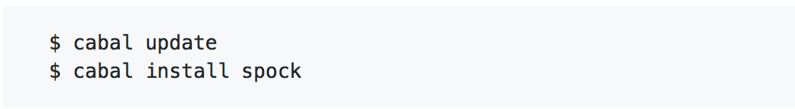
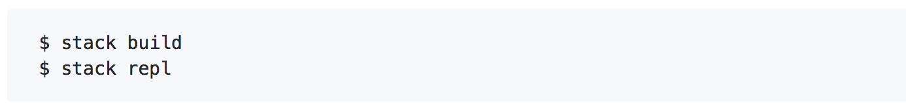

Für die Installation der Software wird eine vorhergehende Installation des Haskell Stacks benötigt.
Die Installationsanleitung ist unter folgenden Link zu finden:
Haskell Stack
Die Anwendung muss zuerst vom Github-Repository gecloned oder als zip gedownloaded werden.
Sie ist unter folgendem Link verfügbar:
https://github.com/ob-fun-ws17/studienarbeit-florianfrank
Für die Datenbankanbindung und den Webserver wird das Framework
Spock
verwendet, dieses wird mit den Befehlen installiert.

Im Projektordner des Atemschutzplaners liegt die Datei
Atemschutzplaner.cfg bei.
Diese enthält zwei Parameter:
|
db:
|
Hier wird der Name der Datenbank angegeben. Standardmäßig heißt diese "Atemschutzterminplaner.db"
|
|
port:
|
Hier wird der Port angegeben. Standardmäßig ist dieser mit 8080 belegt.
|
Zum Übersetzen des Projektes müssen im Projektordner folgende Befehle ausgeführt werden.
